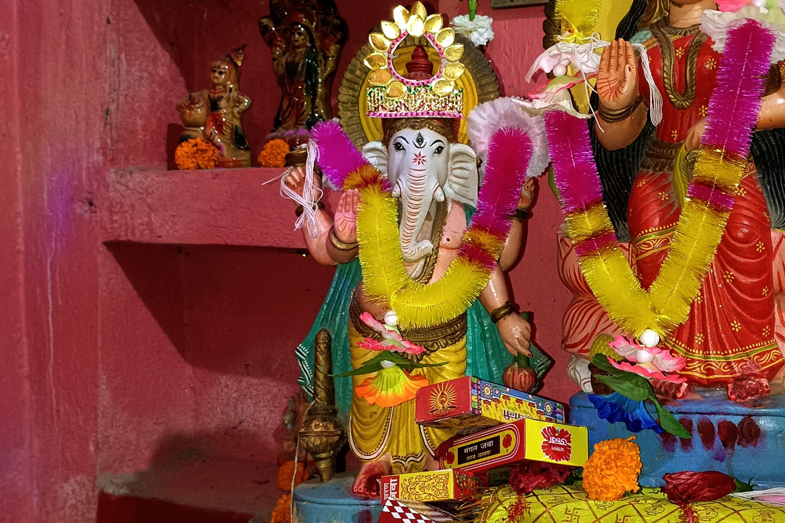
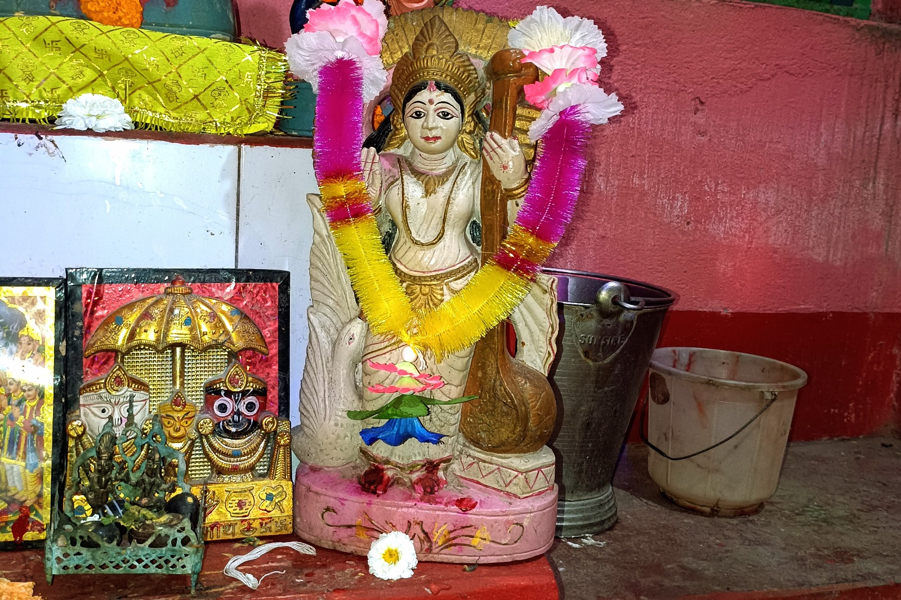
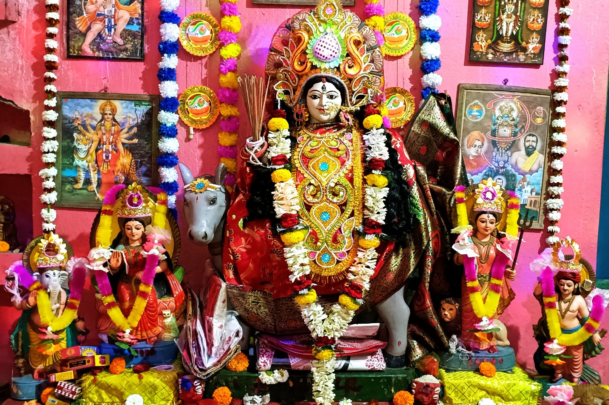
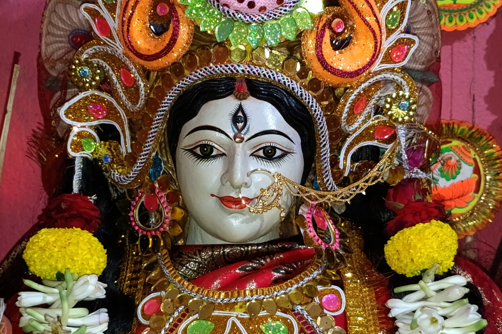
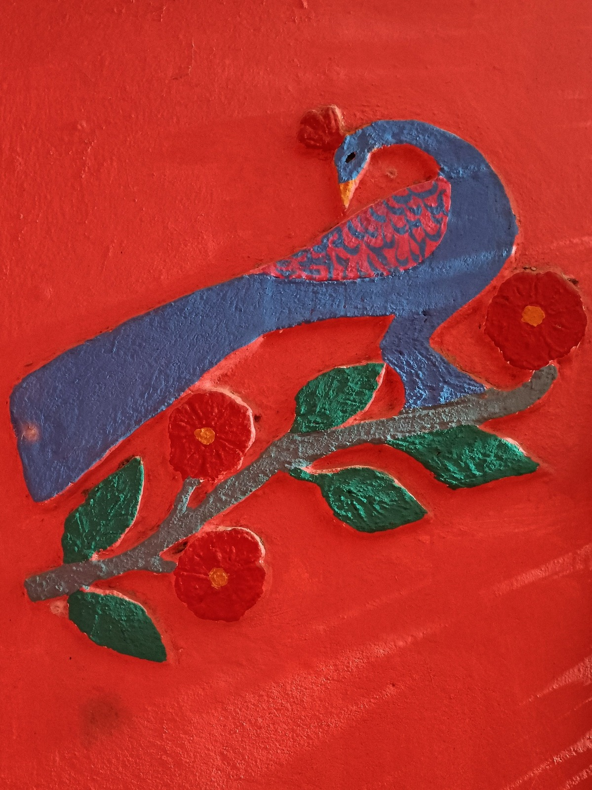

গণেশ
শুভ সূচনার দেবতা।
সবচেয়ে প্রথমে পূজা করা হয়।

শুভ সূচনার দেবতা।
সবচেয়ে প্রথমে পূজা করা হয়।

সম্পদ ও সমৃদ্ধির দেবী।
সুখ ও সৌভাগ্য এনে দেন।

শক্তি ও সুরক্ষার প্রতীক।
অশুভ শক্তির বিনাশ করেন।

যুদ্ধ ও বীরত্বের দেবতা।
যৌবন ও সাহসের প্রতীক।

অশুভ নাশিনী
শক্তির রূপী, শান্তির প্রতীক।

জ্ঞান ও কলার দেবী।
বিদ্যা ও বুদ্ধির আশীর্বাদ দেন।

মা শীতলাকে সাধারণত গাধার ওপর আরোহী রূপে দেখানো হয়। তাঁর এক হাতে থাকে ঝাঁটা, আরেক হাতে থাকে একটি কুলো বা জলভর্তি কলস। ঝাঁটা দিয়ে তিনি রোগ-ব্যাধি দূর করেন এবং কলসের শীতল জল দিয়ে মানুষের দুঃখ-কষ্ট শান্ত করেন।
অনেক পুরাণে বলা হয়েছে, তিনি হলেন স্কন্দ পুরাণ-এ বর্ণিত শক্তির এক দিব্য রূপ।
কথিত আছে, এক সময় পৃথিবীতে ভয়াবহ মহামারী ছড়িয়ে পড়ে। মানুষ অসহায় হয়ে দেবতাদের কাছে প্রার্থনা করে। তখন দেবতারা ভগবান শিব-এর কাছে সাহায্য চান। শিবের কৃপায় এক দেবী আবির্ভূত হন, যিনি মানুষের শরীর ও মনকে শীতল করে রোগ-ব্যাধি দূর করতে পারেন। তিনিই মা শীতলা।
আরও এক মতে, তিনি হলেন দেবী পার্বতী-এর এক বিশেষ রূপ, যিনি মানুষের কষ্ট লাঘব করতে অবতীর্ণ হন।
বাংলায় সাধারণত চৈত্র মাসে শীতলা পূজা পালিত হয়। শীতলা পূজার দিন ভক্তরা মায়ের কাছে প্রসাদ নিবেদন করেন। "শীতলা" শব্দের অর্থই হলো শীতল বা শান্তিদায়ক — যা শান্তি ও আরোগ্যের প্রতীক।
পুরান অনুযায়ী, মা শীতলার প্রতি ভক্তি ও শ্রদ্ধা থাকলে, তিনি রোগ-ব্যাধি ও মহামারী থেকে মানুষকে রক্ষা করেন।
মা শীতলার একটি প্রচলিত মন্ত্র:
“ওঁ শীতলায়ৈ নমঃ।”
আরেকটি ভক্তিপূর্ণ মন্ত্র জপ করা হয়:
“ওঁ হ্রীং শ্রীং শীতলায়ৈ নমঃ।”
ভক্তিভরে ও শান্ত মনে জপ করলে মা শীতলার কৃপা লাভ হয় বলে বিশ্বাস করা হয়।
মা শীতলার কাহিনি আমাদের শেখায় — স্বাস্থ্যই আসল সম্পদ। পরিচ্ছন্নতা, বিশ্বাস ও মানবতার মধ্য দিয়েই রোগ-ব্যাধি থেকে মুক্তি সম্ভব। ভক্তি ও নম্রতা থাকলে দেবীর কৃপা সবসময় মানুষের সঙ্গে থাকে।



যদি আপনার কোনো সমস্যা বা প্রশ্ন থাকে,
অনুগ্রহ করে আমাদের জানান।
আমরা চেষ্টা করব আপনাকে সাহায্য করার।
ই-মেইল: shitla.mandir.varied646@passfwd.com
ফিডব্যাক দিনআজকের বাংলা তারিখ ও পঞ্জিকা দেখুন




চৌতালা শীতলা মন্দিরে আপনাকে স্বাগতম! আমাদের পরিবারের তত্ত্বাবধানে এই সাইটটি
মন্দিরের ইতিহাস, পূজা ও অনুষ্ঠান সম্পর্কে ভক্তদের জানাতে তৈরি করা হয়েছে।
আসুন, ভক্তি ও শান্তির এই পবিত্র স্থানটি অনুভব করুন।